01
先講清楚：「馬具」是什麼？
Harness 直譯是馬具。講者用了一張很好懂的圖：一匹脫韁野馬，力氣很大，但你完全管不了牠往哪跑。套上馬具之後，你叫牠去哪、牠就去哪。
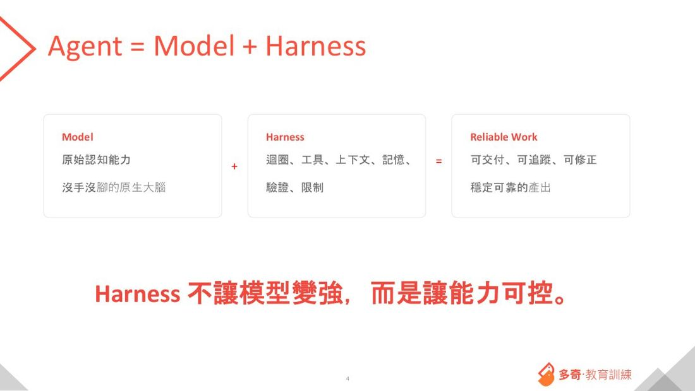
講者最接地氣的解釋：「我們不外乎接了案就是為了結案。結案才能收錢嘛。所以結案就是我 Harness 的目標。中間為了確保品質、效率要做的那一堆事，通稱 Harness。」
他也提醒：硬翻成中文很容易失焦（駕馭工程？馬具？）。它真正描述的是——在工程場景裡，如何規範與限制 AI 的產出，讓它照你要的方向走。
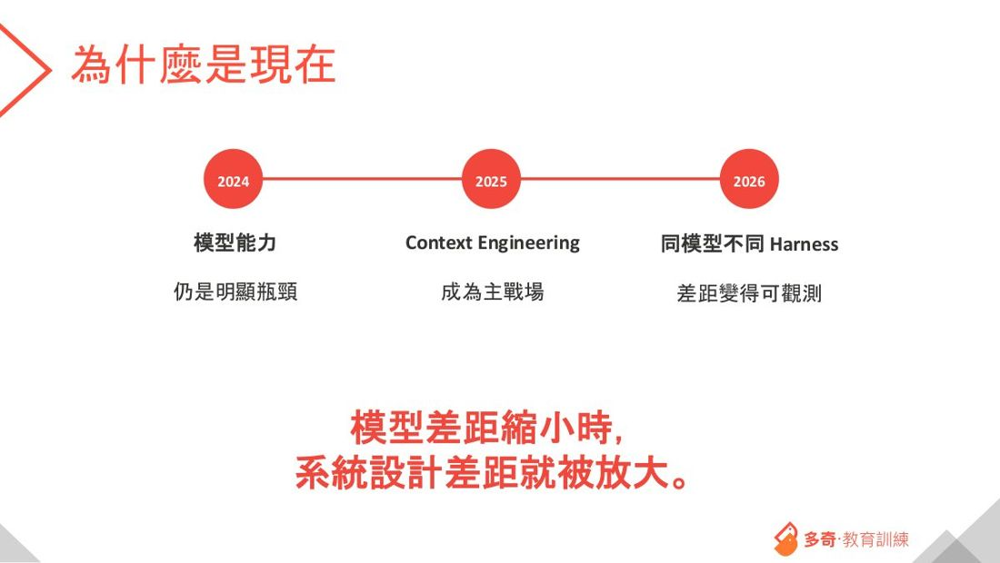
02
三個實證：這件事到底有多大差別
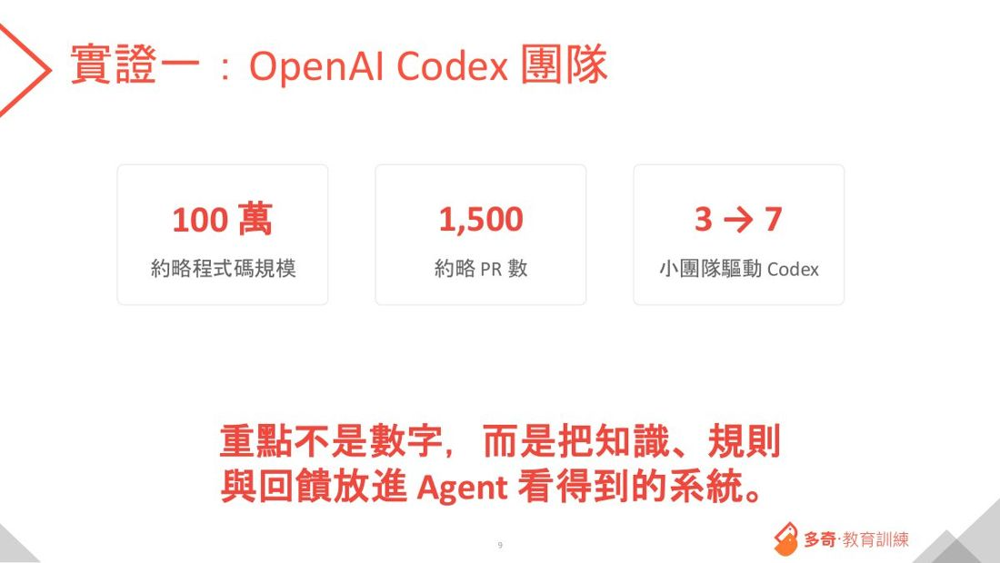
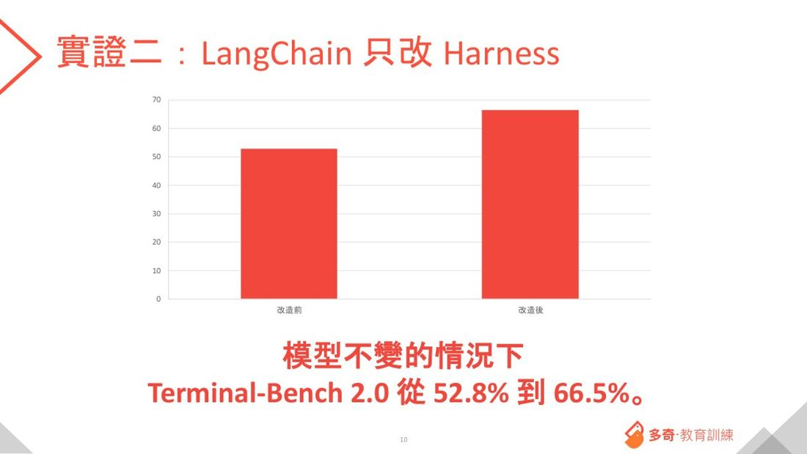
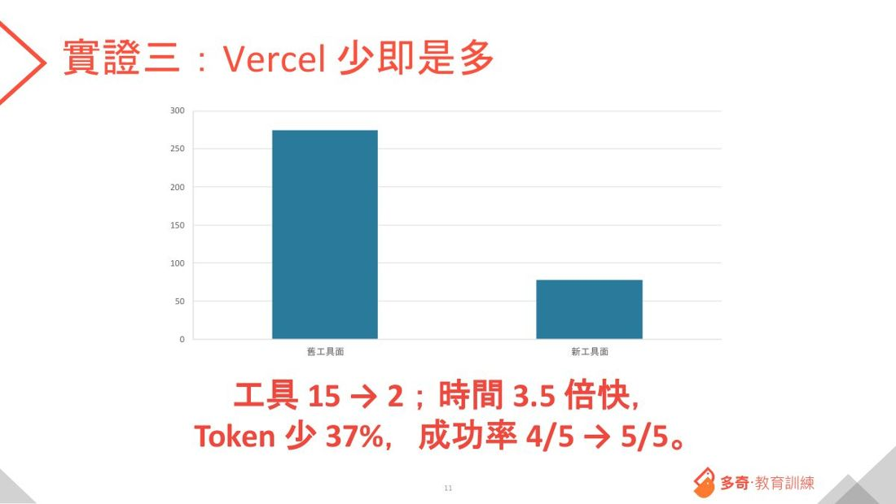
這是全場最重要的一個反直覺結論：馬具不是「想到什麼就全部加進去」。Vercel 是把工具砍掉才變快變準的。
講者反覆強調：「Harness 不是多多益善。你做了一大堆工作、把所有洞都補起來，Harness 就變強了嗎？其實並不是。」
03
他在意的三件事（很誠實）
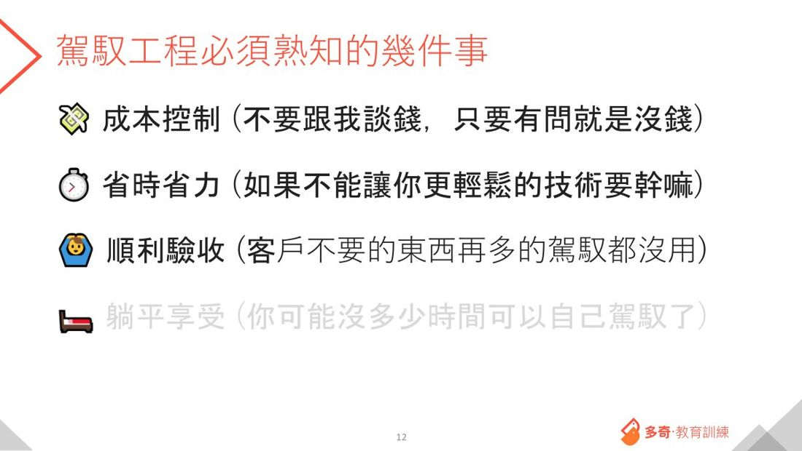
| 在意的事 | 他的原話 |
|---|---|
| 成本控制 | 「不要跟我談錢，只要有問就是沒錢。」能免費不要叫我付費——用 AI 不都這樣嗎？ |
| 省時省力 | 「如果不能讓你更輕鬆的技術要幹嘛？」不想講太高大上的東西，就問：這有沒有讓你更輕鬆？ |
| 順利驗收 | 「客戶不要的東西做再多也沒用。」我燒了一堆 token，能不能讓專案順利驗收？ |
一個讓客戶震驚的提案
他上週提案一個兩年期的專案，做法是這樣的：
① 先花 2~3 個月做 假資料，讓舊系統能跑出穩定可靠的測試結果（因為舊系統一行測試都沒有）
② 花一年把新程式寫完，提供100% 單元測試
③ 新舊系統共用同一組資料庫與假資料跑測試，確保兩邊產出百分之百相同
客戶的反應：「我在這家公司待了二十多年，從來沒有聽過任何一個廠商提過這種想法。」
為什麼沒人做？講者說得很白：因為準備假資料很無聊。要花三個月不能寫程式，每天理解商業邏輯、看舊程式碼、生一筆客戶不願意給你真資料的假資料，最後結果還要正確。「你交下去，只要沒有時間壓力、沒有目標，根本沒有人會做這件事。」
04
真實帳單（這段最值錢）
💵 他公司上個月的 AI 費用：15,000 美金（實打實的費用，不是喊的）。40 多個工程師，全公司的 token 都是他一個人付。
🔥 一個前端工程師，一天燒掉 3 億 7 千萬 token——一個人一天花掉他 200 美金。
PM 對這個人的評價是：「表現不錯、配合度高、開發速度快。」
他去查了那個人的提示詞，發現問題在哪
那位工程師大部分的提示詞，就是把 PM 或客戶交過來的修改建議稍微整理一下，直接送給 AI。做得出來、找得到，但太燒。
為什麼會燒成這樣？因為客戶那份老專案有 30 萬行程式碼。當你給一個模糊的需求，又沒有 AGENTS.md、沒有足夠的 Skill，AI 會盡一切可能去搞懂你到底想幹嘛——於是它開始大量搜尋原始碼。每搜一個不夠精準的關鍵字，30 萬行裡隨便都撈出幾千行，而這幾千行全部都會進到對話裡。
結果：每一個提示詞，至少 70 萬到 100 萬 token 起跳。
🎉 但同一家公司，優化之後：上週全公司的 AI 用量是 13 美金。
關鍵是他不幫每個人買訂閱，而是集中供應——這樣才有辦法做 API 閘道、做控管、拿到數據。「身為一個公司的經營者，很多東西我必須掌握數據，才有辦法做事、才有辦法分析好壞。」
他對訂閱制的洞察（有點扎心）：「吃訂閱的人，在額度用光之前就是燒到爆。等用到快沒了才會認真思考 token 怎麼用才有效率。但當你 20 美金用到快完，你會先升級到 100 美金——然後焦慮就突然消失了，你永遠不會花時間去研究效率。」
他也順帶點名：那些高喊「把人從流程中移掉」的公司，通通都是賣 token 的人。不過他也補了一句公道話：「人的時間不管怎麼算都比 token 貴，只是我花了 token、錢還賺不回來，這才是問題。」
05
他的省錢絕招：把算力借給 ChatGPT 網站
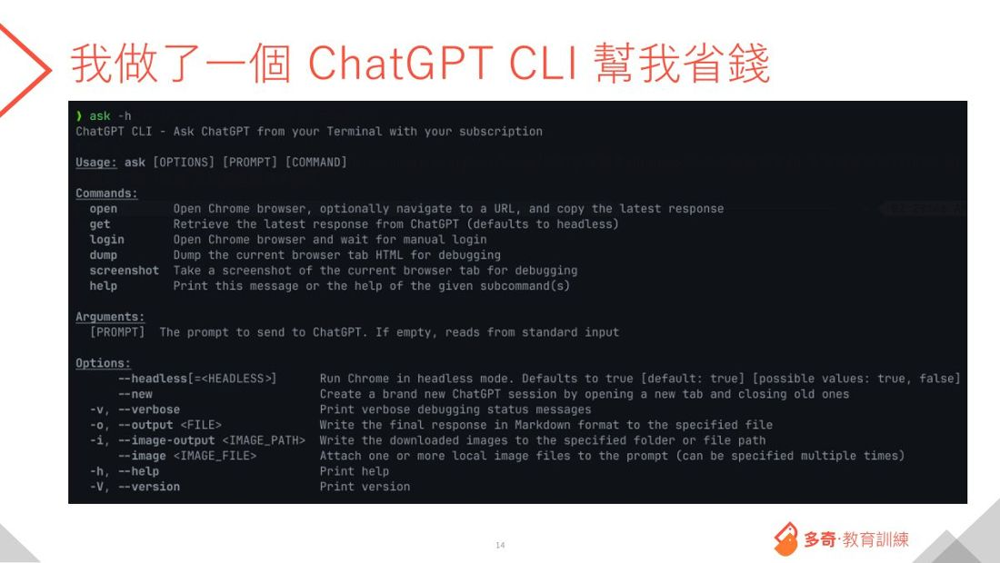
一般人講馬具都在講寫程式的工具，他卻走了一條不同的路。原理很簡單：
① 先手動用瀏覽器登入 ChatGPT（不用搞二階段驗證那些麻煩事）
② 之後在終端機直接打指令提問，瀏覽器完全在背景跑，你看不到它
③ 幾分鐘後，完整的答案直接吐回終端機
④ 把它包成一個技能包，就變成你自己馬具的一部分
重點：ChatGPT 網站的額度非常大，這樣幾乎花不到 token 費用。
實際用法：「我今天要改一個 Bug，但我真的不了解它的核心概念。」提示詞就寫：請你用 ChatGPT 幫我分析一下，然後給我一份開發計畫。你的 AI 就會自動去呼叫 ChatGPT、拿回結果、繼續往下做——整個過程你不用介入。
順帶一提：他本來很愛用 ChatGPT 的「智能體模式」（開一台虛擬機跑一兩個小時、完全不計 token，Pro 訂閱一個月 200 次）。他曾用它花 47 分鐘從教育部網站爬完所有筆順檔打包下載。但這功能在他演講前一天被下架了——他猜是要移到需要計費的地方去。
06
馬具的六個層次
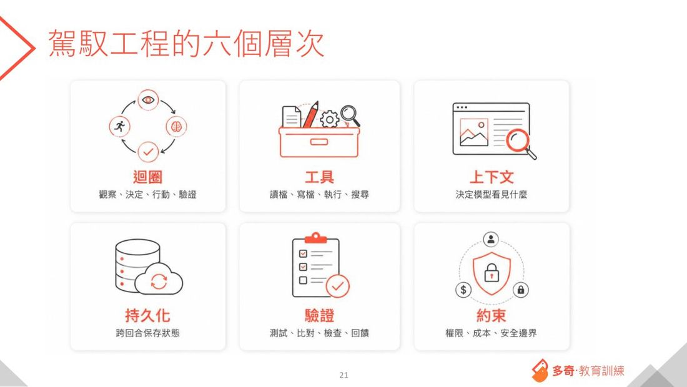
幫你消除 FOMO：這六件事，現在幾乎所有第一線的 AI 開發工具都已經內建了。差別只在「每個人心中想要的馬具長相不一樣」。講者說：「這裡好多東西要學喔、學不完——結果保哥說一句：其實不學也沒關係啦。」用 Claude Opus 這種強模型跑，你不做馬具它也跑得完。那為什麼要做？成本。
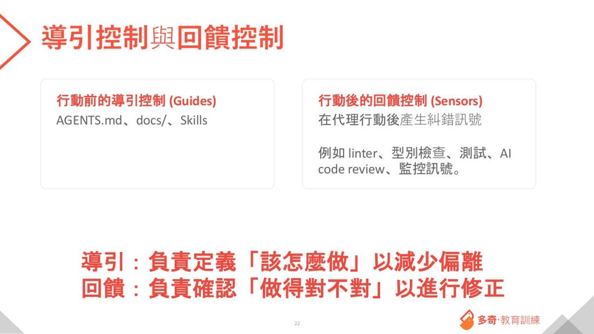
| 類型 | 時機 | 例子 | 管什麼 |
|---|---|---|---|
| Guides（導引） | 行動前 | AGENTS.md、文件、Skills | 該怎麼做 |
| Sensors（回饋） | 行動後 | 測試、Linter、型別檢查、AI 審查 | 對不對 |
| Constraints（限制） | 全程 | 權限、網路、檔案、防火牆 | 能不能做 |
講者特別提醒：Skill 有時候不一定要是 Skill，它可能只是「有組織地規劃好、能漸進式載入的文件」。而且——這些都不做，一樣可以把任務完成，差別只在 token 的耗用量。
07
驗證是馬具的心臟
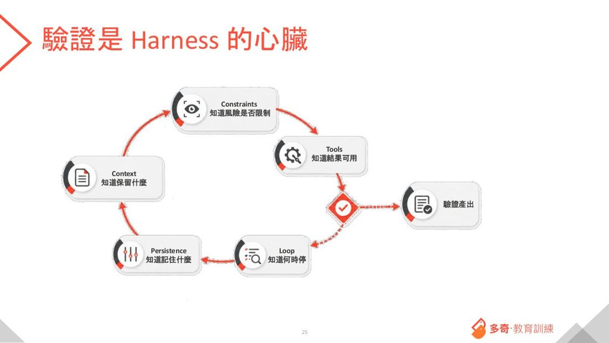
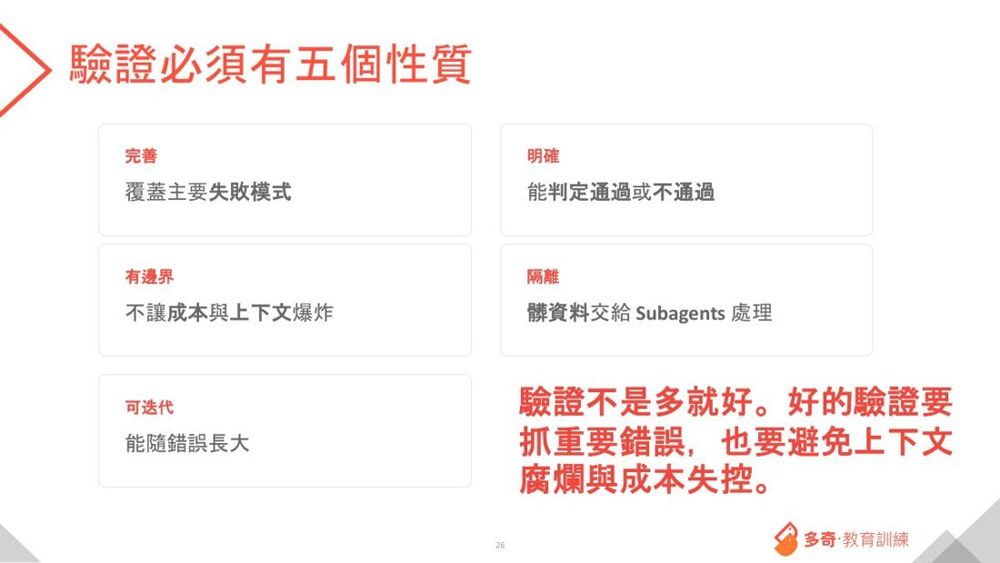
| 性質 | 意思 |
|---|---|
| 完善 | 覆蓋主要的失敗模式（不是覆蓋全部） |
| 明確 | 能判定通過或不通過 |
| 可迭代 | 能隨著遇到的錯誤慢慢長大 |
| 有邊界 | 不讓成本與對話長度爆炸 |
| 隔離 | 髒資料交給分身處理 |
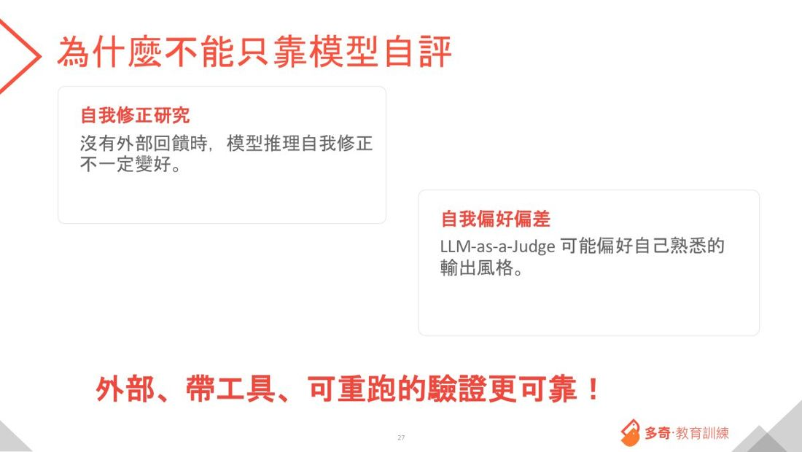
AI 當裁判不是萬靈丹。講者舉了自家案例：客戶想用 AI 做人事考核——他怎麼想都覺得不對勁。「你不給 AI 上下文，AI 只會瞎掰。」你要怎麼讓 AI 評判一個人的工作表現？把某個人的信箱全部塞進去嗎？
他的結論：能用外部工具、可重跑的驗證最可靠，不要過度依賴 AI 裁判。
但他自己也用：做網頁設計時，「我自己沒有美感，就找有美感的去 judge 它」——叫 Claude Sonnet 看網頁好不好看，覺得不好看就叫 GPT-5.5 去改。他說 AI 的美感竟然比他好。「但如果我是專業設計師，可能就會覺得這 AI 不能用。每個人要求不一樣。」
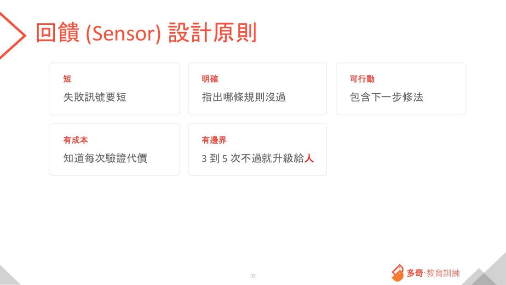
這頁有一條很實用的規則：3 到 5 次不過，就升級給人處理。
08
上下文腐爛，與「分身」解法
先講一個你可能沒想過的問題。AI 寫完程式 → 你跑驗證 → 一堆錯誤 → 拿去修 → 再驗證 → 又一份報告……
那些錯的程式碼、那些驗證報告，全部都累積在對話裡。
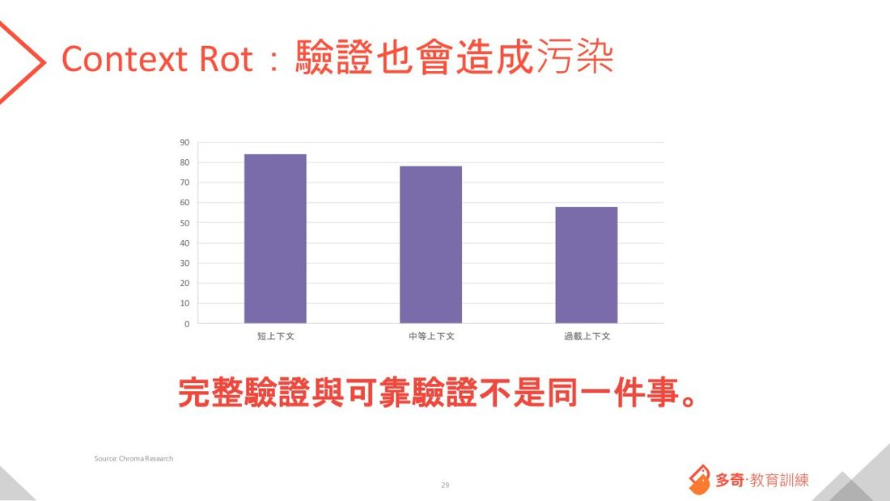
你可能以為 AI 很聰明、應該能自己理解脈絡。但並不是——這就是 上下文腐爛：脈絡雖然在，但注意力被稀釋了。
講者原話：「今天模型說它支援 100 萬 token，so what？第一，它很貴；第二，100 萬不是每一個 token 它都有辦法注意到。所以偶爾就會出現幻覺。」
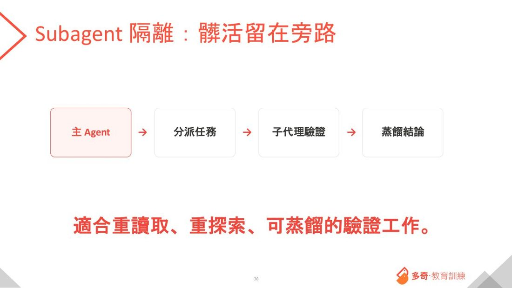
| 分身的好處 | 說明 |
|---|---|
| 不污染主線 | 一堆中間細節不會進到你的主要對話 |
| 省 token | 「透過分身就可以省掉很多 token 費用」 |
| 可以分別選模型 | 每個分身用不同（更便宜的）模型來控成本 |
一個很有意思的概念：「做夢」
講者說他會 challenge 公司工程師：「你為什麼要記這麼多？這些記下來真的對未來有幫助嗎？」
記憶是記起來，做夢是把它精煉後忘掉。具體做法：用一個聰明的模型去分析現有的所有記憶，找出不重要的部分移掉。
（他也把話說白了：所謂 memory 就是 AGENTS.md、就是 Skill，那一堆提示詞就叫做 memory。）
09
實際怎麼開始
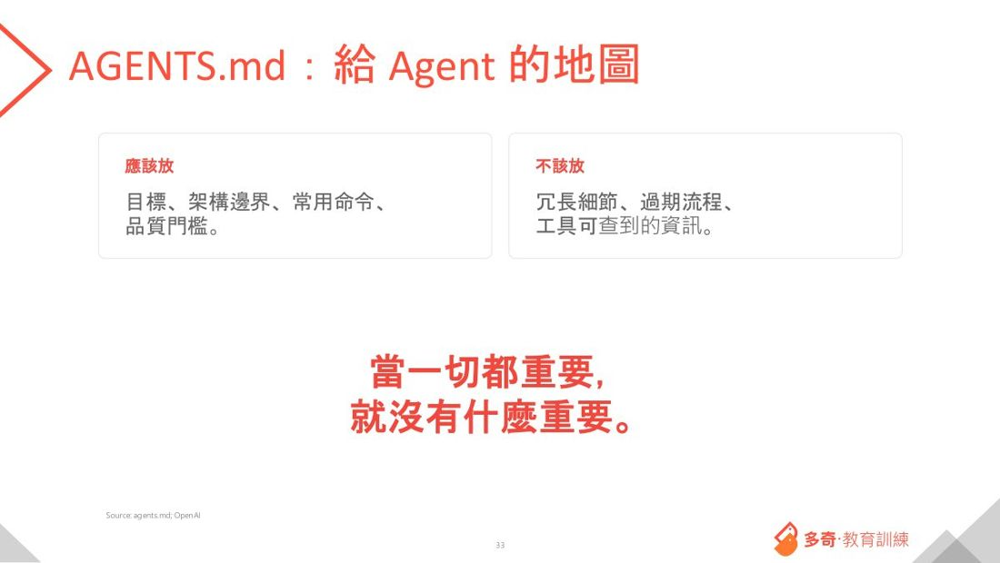
| 內容 | |
|---|---|
| ✅ 該放 | 目標、架構邊界、常用指令、品質門檻 |
| ❌ 不該放 | 冗長細節、過期流程、工具自己查得到的資訊 |
一條硬規則：AGENTS.md 不要超過 400 行。它是一張地圖，不是百科全書。
幾個馬上能用的省 token 招數
裝 LSP——讓 AI 用「程式碼結構」理解程式，而不是當字串硬讀。講者說：沒聽過的回去搜尋一下裝起來，可以大量節省 token。
🔹 用有型別、可編譯的語言——他現在的側專案幾乎清一色用 Rust。
🔹 Skill 只挑要的——他做網頁時挑了漸層、按鈕、玻璃質感、彈窗等近十個設計 Skill，但強調「千萬不能全部下載」。
他自己跑起來的完整迴圈（網頁類專案）
用 Chrome DevTools Protocol 直接遙控瀏覽器：寫程式 → 自動開瀏覽器 → 自動輸入測試資料 → 抓 Console 的錯誤記錄 → 回饋給 AI 繼續改。
「這個迴圈只要建一圈就好。這一圈你只要 build 起來，你就可以跑 100 圈。那這個就叫做 Loop Engineering。」
⚠️ 但他的建議很務實：「不要把 Loop Engineering 先套用到你們公司重要的專案上。花點時間做一個不痛不癢的側專案，把整個迴圈建起來，有成功經驗，你就開始會有品味。」
正式環境的記錄，反過來餵回馬具
他把客戶正式系統的 Log 透過 遙測接進自己的馬具，然後只下一句話：「正式機出了問題，一分鐘之內幫我找出問題。」——AI 自己去撈 Log、自己定位。公司工程師看了都嚇到。
為什麼他的 Log 這麼好用？因為他曾經下過這樣一個目標：「請你幫我把這個應用程式所有可以加 Log 的地方全部加上，至少分三個等級，然後你不滿意不要停。」——它就真的把 Log 全部加滿了。
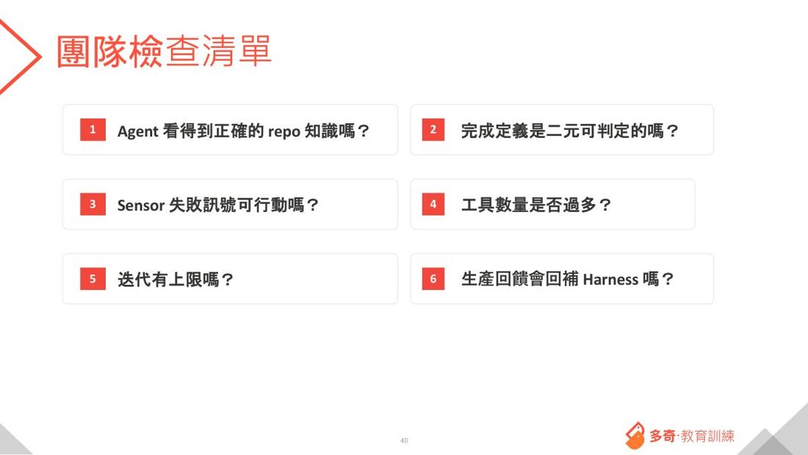
10
全場的真心話：最大的限制在人自己身上
這段沒有投影片重點，但可能是整場最重要的部分。
「你要知道，那個方向感是人給的。當你在打造自己的馬具時，如果你自己當下就沒有方向——沒有方向你做什麼駕馭工程？根本就沒辦法。」
「大語言模型是一顆大腦，它很會想，但它能想到哪裡你永遠不會知道。就跟你隔壁的同事一樣，你壓根不知道他在想什麼。你只能花時間跟它混，沒有別的方法。」
「AI 出現之後很多事情變簡單了。但我們真正該培養的，是把自己的品味拉起來，讓你有能力辨別好跟壞——而不是完全依賴 AI，把工作全丟給它，回來看一看『OK 就 OK』。品味這種東西，不是 OK 就 OK 的問題。」
他還講了一個很生活的例子：他在社區當管委會委員。物業做的宣傳單很醜，有委員跳出來說「我來設計啦」——結果做出來是國中生的水準，但那位委員覺得很美。「這就是品味。你自己覺得很好的東西，在另一個人眼中是不一樣的。」
所以他建議：多走出來參加這種活動，看看別家公司的馬具長什麼樣。
關於「人會不會被取代」，他的回答很妙：「永遠都會有 Human-in-the-Loop。並不是 Human 很重要，而是 Human 沒事做不行啊——人沒事做會亂想嘛。」
他認為大部分公司內部的事情幾乎不可能完全自動化，再怎麼少也需要那麼一個人。
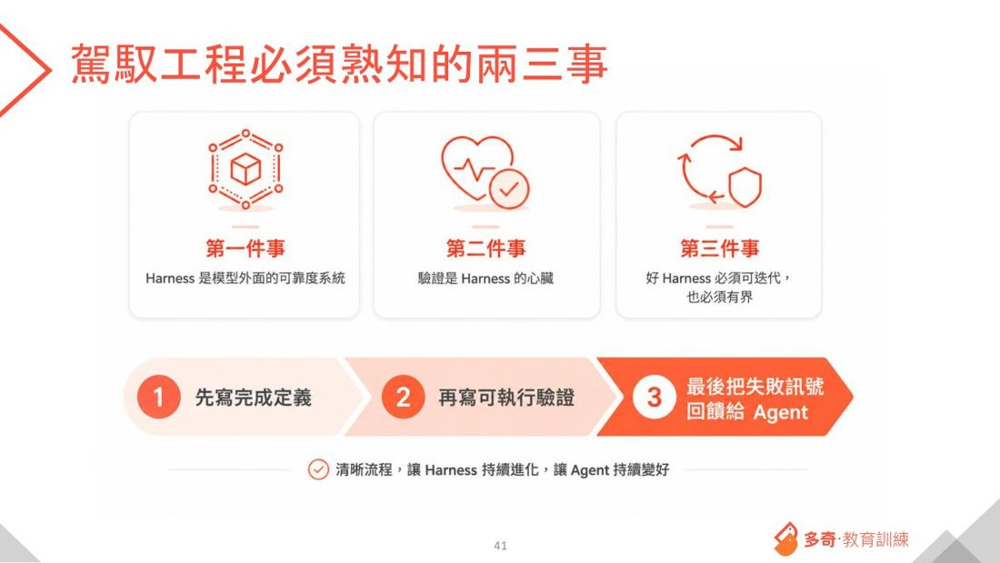
| # | 帶走這句 |
|---|---|
| 1 | Harness 是模型外面的「可靠度系統」。 |
| 2 | 驗證是 Harness 的心臟。 |
| 3 | 好的 Harness 必須可以被迭代，而且必須有邊界。 |
落地順序：① 先寫「什麼叫完成」的定義 → ② 再寫怎麼驗證 → ③ 把失敗訊號回饋給 AI。這樣整條流程就串起來了。
他也說：Harness 不是重新發明輪子（測試、Linter、沙箱、CI 本來就存在），新價值在於把它們組成一套可設計、可驗證、可迭代的控制系統。而且它不是終局——模型變強時，有些東西會被淘汰。
11
三句話帶走
- 1驗證是 Harness 的心臟。
- 2工具少即是多。
- 3不是加越多越好。
這一塊是 build_v03 從本篇「對南瓜的用處／結語」自動摘的，句子都取自原文。之後可以人工改寫成更好的三句。
12
對南瓜的用處
| 這場的觀念 | 怎麼用在南瓜的工作上 |
|---|---|
| 工具少即是多 （Vercel 15→2） | 南瓜自建 skill 越來越多時要記得：不是加越多越好。砍掉用不到的工具反而更快更準更省。 |
| Token 效率是可以差 1000 倍的 | 同一家公司從月費 15,000 美金到週費 13 美金。南瓜很在意 token——關鍵在提示詞夠不夠精準、有沒有 AGENTS.md 幫 AI 少繞路。 |
| AGENTS.md 是地圖不是百科 （≤400 行） | 直接適用南瓜剛補的那 9 份 CLAUDE.md：放目標、邊界、常用指令、品質門檻；不要放工具自己查得到的東西。 |
| 裝 LSP 省 token | 馬上可做、成本低的優化。 |
| Subagent 隔離髒活 | ai-agent-office-visualization pixel-office 的派工設計正好用得上：髒活留旁路、主線只收結論、分身用便宜模型。 |
| 「做夢」：記憶要精煉 | 南瓜的第二大腦與 CLAUDE.md 會越長越大。定期讓 AI 分析並移掉不重要的部分，避免記憶腐爛。 |
| 3~5 次不過就給人 | 防無限迴圈燒 token 的實用規則，可寫進 skill 的驗收段。 |
| 先在小專案建完整迴圈 | 「不要先套用到重要專案上」——南瓜可以拿旅遊小幫手或紋理撕裂機這種小工具練一次完整迴圈。 |
| 假資料與測試＝驗收保證 | 對接案公司特別有價值。南瓜做標案／專案時，「我保證新舊系統產出 100% 相同」是很強的提案差異點。 |
| 品味是人給的方向 | 呼應南瓜美術總監的角色：AI 做得出來，但好不好、對不對，還是要有人能判斷。 |
13
專有名詞小辭典（看不懂的詞來這裡查）
內文有底線加問號的詞，點了就會跳到這裡對應那一列。
| 專有名詞 | 白話解釋 |
|---|---|
| Harness（駕馭工程） | 原意是「馬具」。脫韁野馬有力氣但你管不了它往哪跑；套上馬具，它就能照你要的方向跑。放到 AI 上就是：**模型外面那一整套讓產出變可靠的系統**——迴圈、工具、上下文、記憶、驗證、限制。 |
| Loop Engineering（迴圈工程） | 比 Harness 更外圈：不只武裝一次執行，而是設計「反覆執行的整條流水線」。講者說兩者本質相同，只是範圍不同。 |
| AI Agent（AI 代理人） | 會自己動手做事的 AI。講者強調：Coding Agent 跟 AI Agent 本質上是同一種東西。 |
| Sensor（感測器／回饋） | 行動「之後」的檢查機制——測試、Linter、型別檢查、AI 審查。管的是**「對不對」**。 |
| Guide（導引） | 行動「之前」給的指引——AGENTS.md、文件、Skills。管的是**「該怎麼做」**。 |
| Constraint（限制） | 管的是**「能不能做」**——權限、網路、檔案、指令白名單。跟 Sensor 是兩回事。 |
| AGENTS.md | 放在專案裡給 AI 看的說明書。講者說：**它是一張地圖，不是一本百科全書**，不要超過 400 行。 |
| Skill（技能包） | 把某項本領整包封裝起來。講者做網頁時下載了近十個設計類 Skill（漸層、按鈕、玻璃質感、彈窗…），**但強調「千萬不能全部下載，就挑你要的」**。 |
| Subagent（子代理／分身） | 派出去做髒活的小 AI。它自己有一份獨立的腦容量，做完只回傳結論——**中間的雜訊不會污染主 AI**。 |
| Context Rot（上下文腐爛） | 對話越長，AI 的注意力被稀釋得越嚴重。就算模型號稱能吃 100 萬字，也不代表每個字它都注意得到。 |
| Context Window（腦容量） | AI 一次能記住的內容上限。 |
| LLM-as-a-Judge（AI 當裁判） | 找另一個 AI 來評分。講者自嘲「我自己沒美感，就找有美感的 AI 去 judge」，但也提醒它不是萬靈丹。 |
| 自我偏好偏差 | AI 當裁判時，會偏好「自己熟悉的輸出風格」。所以自己評自己特別不準。 |
| Dreaming（做夢） | 記憶要記起來，也要忘掉。「做夢」就是用一個聰明模型去分析現有記憶，**把不重要的精煉掉**，免得記憶越積越髒。 |
| LSP（Language Server Protocol） | 讓 AI 用「程式碼的結構」去理解程式，而不是把它當一堆字串來讀。講者說：**沒聽過的回去裝起來，可以大量省 token**。 |
| Vibe Coding | 不自己寫程式碼，靠跟 AI 對話把東西做出來。講者的兩個側專案（筆順練習、成語星球）都是這樣做的。 |
| SDD（規格先行開發） | 先寫好規格，再讓 AI 照著做。 |
| Chrome DevTools Protocol | 用程式直接遙控瀏覽器。講者用它做「寫完程式→自動開瀏覽器測試→抓 Console 錯誤→回饋給 AI 改」的完整迴圈。 |
| Telemetry（遙測） | 把正式環境的實際運行記錄（Log）撈回來，反過來改善你的 Harness 設定。 |
| Human-in-the-Loop | 流程中保留人介入的環節。講者的說法很直白：「並不是 Human 很重要，而是 Human 沒事做不行啊，人沒事做會亂想嘛。」 |
| Mock Data（模擬資料） | 為了測試而做的假資料。講者說工程師都不願意做這件事，因為很無聊——但這正是能不能順利驗收的關鍵。 |
| FOMO（錯失恐懼） | 怕跟不上、怕漏學。講者特別安撫：這些東西「其實不學也沒關係啦」，工具本來就內建了。 |
My note · 我的一句話（只有你看得到）
打完點一下外面就會存起來。